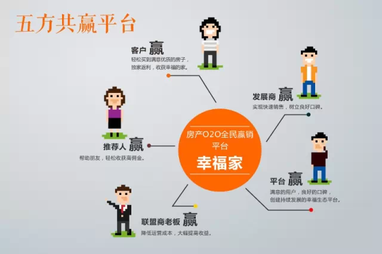
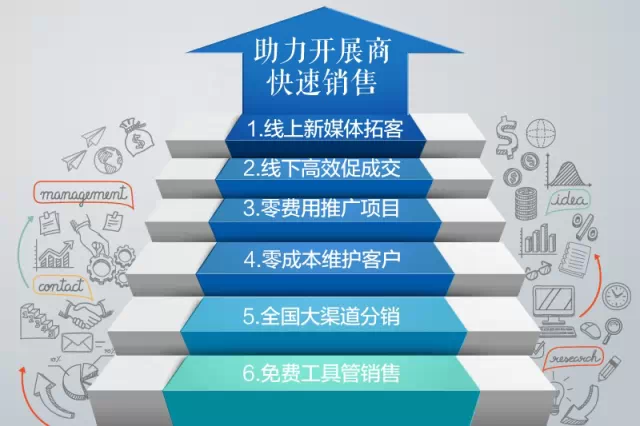
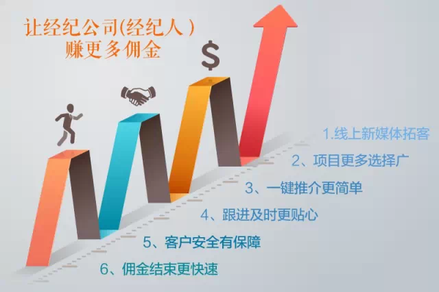

珠海幸福家网络科技股份有限公司以"幸福千万家"为使命，是一个为开发商、代理商、经纪人、买房客户和幸福家联盟商搭建五方共赢生态圈的房产O2O电商平台，我们致力于降低房地产买卖成本，让卖房更轻松高效，买房更方便实惠。
"全民赢销"和"购房返利"是幸福家的两大平台，幸福合伙人通过APP或网站线上推荐亲戚朋友购买优质特惠房，幸福家售楼部、联盟商店面、幸福家交易中心专业纪纪人完成线下接待和成交。购房客户过通过幸福家微信公众号，获得更多优惠折扣，轻松选择全国房源，购房成功可得到高额利。
幸福家平台是一个全国性的电商平台，所以对于发展商来说，与幸福家合作就意味着整合全国渠道进行推广销售，改变了过往客源分散，渠道单一的现状。通过幸福家全国城市分站进行拓客分销，既提高了效率，又节省了大把推广和营销费用。
首先幸福家的佣金比较高，大概高于市场几倍。其次，是操作简便，推荐人只需输入购房者信息，其它事项全由幸福家解决。幸福家平台管理系统、幸福家客服团队、幸福家线下接待人员会全力服务好每一被推荐人，从上门、预定、签约、成交到佣金给付，幸福家一手包办，真正实现"一键式推荐赚佣金"。
幸福家目前已落地全国近100个城市，未来三年目标将落地全国200个城市、发展4万个联盟商、注册400万个幸福合伙人，多渠道全方位传播项目信息，与更多有购房需求的人士有效接触。幸福家前期以新房和家居服务业务为主，落地全国城市，逐步以大数据为核心，发展二手中介业务、金融理财业务，最终实现多方共赢的O2O大平台。